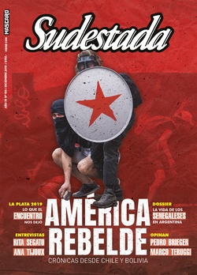

Buscar
Una fiesta feminista en el corazón de La Plata
El 12, 13 y 14 de octubre más de 300 mil mujeres, lesbianas, trans, travestis y no binaries celebraron el 34° Encuentro en la capital de Buenos Aires. Como cada año viajaron desde distintos puntos del país para debatir acerca de problemáticas que atraviesan sus vidas. Este encuentro, como todos los anteriores, estuvo signado por la coyuntura: las elecciones presidenciales y el cese de un gobierno que durante cuatro años aplazó las temáticas de género. También pisó el reclamo por la plurinacionalidad y la integración de las disidencias en el cambio de nombre, que dejó al descubierto las resistencias de determinados sectores. San Luis será la próxima sede y promete un cambio en las estructuras.
Edición N° 159
Diciembre 2019
Revista bimensual
Comprar edición impresaSumario
- Un continente en disputa
- La batalla de Chile
- Diario urgente de un golpe
- Te gusta vivir así
- Una fiesta feminista en el corazón de La Plata
- Un asco recíproco nos permite convivir
- El día que descubrieron a Colón
- Los días sin Ana
- “Hay una catástrofe de género, es necesario darse cuenta”
- Cantoras del Chile rebelde
- El freestyle es de las pibas
- Echando raíces
- "Se puede cuestionar este mundo difícil cantando"
Compartir Articulo
"La Plata es la capital de las baldosas flojas", dice una piba y el resto de las amigas se ríen y le dan la razón. Van a los saltos, con las capuchas puestas, y esquivan los charcos barrosos. Dejaron el auto a unas cuadras de la Facultad de Humanidades, porque sabían que si se acercaban demasiado iban a quedar atrapadas en el caos vehicular y los grupos de pibas que, en manada, se agolpaban en las sendas peatonales, incluso aunque el semáforo marcara verde. La lluvia va y viene, aunque no detiene el paso imparable de este 34° Encuentro. A las tres y media de la tarde, las filas para ingresar a las aulas de los talleres dan la vuelta a las esquinas.
En un rito, artistas y referentas feministas de América Latina, se habían reunido la noche anterior a conversar en el Centro Cultural Olga Vázquez. El libro "Las revoluciones de Berta", que recupera el gran testimonio de Berta Cáceres a través de Claudia Korol, yacía en el suelo, rodeado de cuatro velas encendidas. "No es mito, ni leyenda. Es una mujer que transgredió muchas fronteras en las que se pretenden encerrar los proyectos libertarios. Revolucionaria desde jovencita, casi desde niña […] educadora popular, comunicadora, lectora infatigable, feminista en sus actos y en su pensamiento [...] Muchas Bertas y siempre la misma: la compañera indomesticable", recordaba Korol en el prólogo a la activista.
Fue un festival que reivindicaron feminista, anticolonial, disidente, antirracista, místico y plurinacional. En esa noche de previa organizada por la Campaña Somos Plurinacional compartieron mapuches, afrodescendientes, lesbianas, raperas y cumbieras, comunicadoras y activistas guatemaltecas, peruanas, bolivianas, ecuatorianas, brasileras y uruguayas. Y así, con las velas encendidas, con Berta presente, con las fronteras abiertas y con lo revolucionario de encontrarse una vez más, comenzó el evento feminista más importante del año.
La mañana siguiente algunas escuelas amanecieron inundadas en La Plata, también hubo anegamientos a causa de la tormenta de madrugada. Cuando salió el sol, tampoco paró de llover y una disposición del Cuerpo de Bomberos de la ciudad suspendió por seguridad el acto de apertura que estaba previsto a partir de las nueve de la mañana. Las encuentreras no pudieron darse la bienvenida en el playón del Estadio Único. Aunque eso no evitó que salieran a las calles con paraguas y pilotines.
Una columna avanzó, de todos modos, por la calle 25. Decidió marchar hasta las cercanías del estadio. "Ahora, que se escuchen nuestras voces, que suenen nuestras gargantas. Hoy vinimos a cambiar la historia. Nos pronunciamos por la unidad de este encuentro, que es de todxs, porque lo que no se nombra no existe. Y lo que no existe no tiene derechos. Después de años y años de debates, este encuentro abraza a todas nuestras resistencias", gritaron integrantes de la Campaña Somos Plurinacional desde un escenario móvil.
Desde todos los rincones del país hasta el corazón de Buenos Aires. Al hablar de asistentes los números rondan entre 200 y 400 mil. Las cifras crecieron y decrecieron, no fue posible determinar con exactitud cuántas personas pasaron por este 34° Encuentro, entre quienes fueron por primera vez y quienes llevaban asistencia perfecta a los anteriores.
Entre tantas miles, arribó el sábado al mediodía un grupo de motoqueras en caravana. Se habían juntado días atrás para organizar la llegada y marcar un protocolo de cuidado, también para definir cómo iban a decorar sus motos. Eran deliverys, mensajeras y mecánicas, entre otras. La idea de rodar una caravana las juntó en el camino. "En el imaginario parece una locura pero nada que ver. Tenemos que sacarnos esa idea de la cabeza. Son cosas que se pueden hacer y en eso estamos. Va a ser una experiencia muy linda y enriquecedora. Anímense a venir con moto o como acompañante", había arengado Jose Nicolini, fotógrafa e integrante de la columna motoquera, en una entrevista para el programa radial La Hoguera Violeta.
Hay encuentros dentro del encuentro. Una red que se extiende hacia los más diversos espacios. Esa es una de las características que prevalece. Fue así como se dio el sábado 12, y por primera vez, una asamblea de trabajadoras de prensa, con comunicadoras de gráfica, radio y televisión de distintos puntos del país que se juntaron a reflexionar sobre la labor periodística, compartir experiencias y problemáticas y hacer énfasis en la necesidad de un periodismo con perspectiva de género.
En una ronda en la calle, una de las periodistas, que vivía en Neuquén, denunció la situación de acoso sexual que estaba viviendo de parte de un superior del medio. Lo compartió porque sintió que ese espacio lleno de compañeras era el lugar donde podía canalizar lo que había padecido y establecer los lazos para generar acciones...
(La nota completa en la edición gráfica de Sudestada... ¿Por qué publicamos apenas un fragmento de cada artículo? Porque la subsistencia de Sudestada depende en un 100 por ciento de la venta y de la confianza con sus lectores, no recibimos subsidios ni pauta alguna, de modo que la venta directa garantiza que nuestra publicación siga en las calles. Gracias por comprender)
Comentarios
Feminacida
Articulos más vistos


LIBRERÍA SUDESTADA

Colección infantil

Distribuidora de Libros

Suscripción

Sudestada en URUGUAY

Otros articulos de esta edición
Te gusta vivir así
No te puede gustar una vida que no conociste por una cuestión lógica: para que te guste algo tenés que ...
Echando raíces
Escapan de la guerra, del hambre, de un contexto hostil o simplemente vienen en busca de una oportunidad. Venden mercadería ...
La batalla de Chile
Fuego de barricada, rabia de estudiante y lucha de un pueblo que, por fin, despertó. Chile es ese vendaval que ...
“Hay una catástrofe de género, es necesario darse cuenta”
Rita Segato dice que se volvió una figura pública sin buscarlo. Hoy, la obra de la antropóloga feminista tiene presencia ...
Un continente en disputa
Qué analista puede anticipar el próximo estallido. Qué politólogo puede establecer con algún grado de seguridad ciertas definiciones categóricas en ...
El freestyle es de las pibas
Las batallas de rap entre competidores -o MCs, como comunmente se les llama- eran un espacio habitado sólo por varones. ...